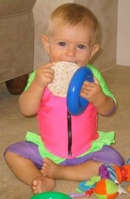
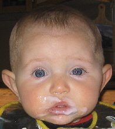

|  When should you be starting baby on solid foods? When your baby’s system can handle them, and when your baby needs more nutrients than can be gained from exclusive breastfeeding. Every baby develops at their own pace. Some babies will show readiness to start solids earlier while others may only be ready to start on solid foods closer to one year of age. The only food that your baby requires for the first 6 months is your breast milk. The rare baby will show signs of readiness to start on solids at an earlier age. If your baby nurses constantly at 4 or 5 months yet seems unsatisfied he may need to eat food. It is a MYTH that giving baby cereal will help your baby to sleep through the night. Sleeping through the night is a developmental milestone that will happen when your baby is ready. Starting baby on solid foods before your baby’s body is ready can lead to:Allergies. Regular digestive upsets. Inadequate nutrient absorption. Recurrent upper respiratory infection. Undue weight gain from excessive calorie intake. Is your baby ready to start on solid foods?Here's an easy way to make healthy homemade baby food. Your baby will let you know that he needs or wants to start eating solid foods. Babies show an interest in food by vocalizing the desire, reaching for it, intently watching others eat, or imitating chewing. If there is a history of food allergies in your family, you may want to delay starting baby on solid foods for as long as possible. When your baby is ready, a healthy way to go is starting baby on solid foods that are home made and natural. Signs That Your Baby Is Ready To Eat Solid FoodsYou'll know that it's time for starting baby on solid foods when your baby shows you the following signs: Intensified demand to nurse is not satisfied after several days of increased breastfeeding. Teeth. Your baby can sit independently and sit alone in a high chair. Your baby loses the tongue-thrust reflex and can swallow foods without gagging. Hand-eye coordination. Ability to pinch objects between thumb and forefinger and can hold little pieces of food in his fingers. Decreased Milk ProductionStarting baby on solid foods, begins the weaning process. Your milk continues to meet three quarters of your baby’s nutritional needs for the second half of the first year, however as your baby eats more solids, breastfeeding will lessen. Babies allowed to wean gradually, at their own pace or baby-led weaning, generally wean during the second year. Some babies wean earlier and some later and it is common and normal for each child to wean at their own pace. Breast milk still provides valuable nutrients to babies beyond 12 months. Starting baby on solid foods early usually causes babies to consume less breast milk at 6-9 months. How to Introduce SolidsNever try to force your baby to eat. Some mothers pass up spoon-feeding altogether and allow their babies to feed themselves as soon as their babies are ready to feed themselves – a very messy yet fun and natural adventure! It is commonly recommended that you introduce foods in a certain pattern or order however, when you wait until your baby is ready, at around 6 months, and you follow your baby’s lead, your baby’s system will probably be ready to handle just about anything. Introduce foods graduallyBreast milk will continue to be your baby’s main source of nutrition so breastfeed first. Introduce foods gradually so that your baby’s digestive system has time to get used to each change. Start slowly with just one or two feedings every other day of about a teaspoon or two per feeding and then gradually increase the amounts. At 7-9 months, one or two feedings and regular breastfeeding satisfies most babies’ needs. At 9-12 months, most babies have three daily meals and several healthy snacks in addition to separate nursing sessions. Mothers who wish to wean can gradually eliminate breastfeeding from mealtimes as the baby begins to eat balanced meals and drink from a cup. Portions and amounts of food Begin starting baby on solid foods with a teaspoon or two of the creamier foods and work your way up according to your baby’s interest and readiness. Follow your baby’s appetite and respond to your baby’s signals as to when he has eaten enough to avoid overfeeding. Best baby foodWhen starting baby on solid foods, you do not have to by jars of commercial baby food which is often over-priced and over-processed. A great investment for your baby’s health and your wallet is a small food grinder or an electric food chopper so that you can make your baby’s food yourself. Adding water, juice or breast milk thins your baby’s food to the appropriate consistency. By making your own baby food, you are getting your baby used to your family’s eating style and your cooking! You will also save money. Your homemade food is more nutritious because it is fresher and you control what goes into is and more importantly, what DOESN’T such as too much salt, sugar, preservatives and empty-calorie-fillers. Food texture and baby’s abilities to chew and swallowPrevent ChokingYour baby’s risk for choking is higher before age 4-6 months due to lack of developmental readiness. You will probably worry about your baby choking during the early days of finger feeding. The higher-risk foods are those that are slippery or round. To be on the safe side, it's best to avoid the following foods for now: Nuts Globs of peanut butter Pieces of raw carrot, popcorn, or nuts Grapes - when serving to your little one, ALWAYS cut them in half. Hot dogs and sausages — if you offer these to your young child, ALWAYS cut lengthwise and then into smaller pieces.
Another idea for introducing new tastes to your baby, without the risk of choking, is a safe baby feeder. Munchkin Fresh Food Feeder You can open the mesh compartment and insert the food of your choice. This toy-like baby feeder allows you to try various foods that could otherwise pose a choking threat. 1 - Start out with diluted and runny foods with liquids added to them. 2 - Decrease liquid content and allow a more coarse texture. 3 – Chunky foods and then finger foods and table foods. You may even begin with these if you have waited until the age of 8-9 months to introduce solids. Finger FoodsThese finger foods can be cut into small pieces and served raw AvocadoBanana Cheerios or other “O” shaped cereal Melon Puffed rice cereal Semi-hard cheeses (after 12 months) Tofu Cooked finger foods Apple slices or sticks Asparagus spears Broccoli spears Carrots sticks or baby carrots Green beans Pear slices or sticks Peas Sweet potato pieces or cubes Zucchini rounds or sticks Try these healthy finger food ideas from Christine from Homemade Baby Food Recipes.Avoid juice dependency. A healthy drink choice is non-sweetened... or water. | ![XML RSS]()


![Add to My MSN]()
![Subscribe with Bloglines]()